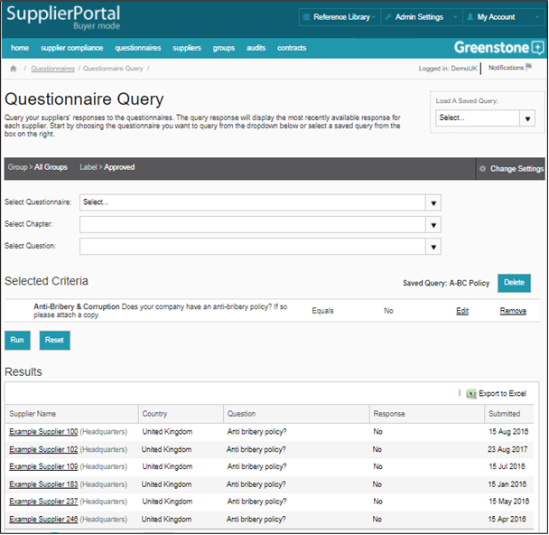

Questionnaire Query enables you to query your Suppliers’ responses to the questionnaires. Use the filters to focus your query by country, group or label. Select the questionnaire, chapter and actual question you want to query using the three drop-downs, select the response you are looking for and click “Add to Criteria”.
You can add multiple search criteria (we advise you use no more than three to ensure you get meaningful results) and when you are ready to run the query, click ‘Run’ and the results will be displayed. Results can be exported into Excel. You can also save your queries by clicking ‘Save This Query’. Saved queries can then be run using the ‘Load Saved Query’ button.
